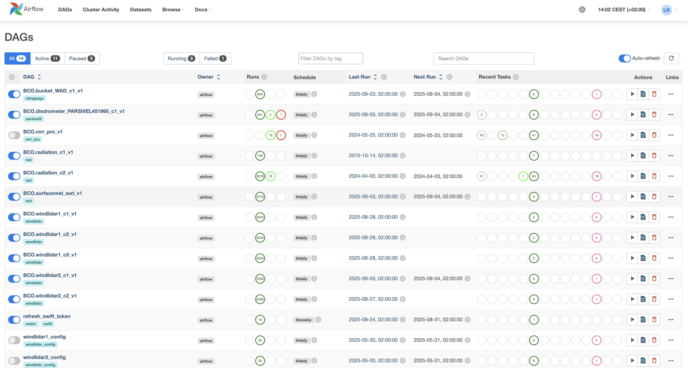

Hello, my name is Rowan!Bringing the tropics to Hamburg…
and Hamburg to the tropics, and the story to CliMA
Rowan Orlijan-Rhyne
2026-12-01
Outline
- What I do (and why)
- What I’d like to do next (and why)
If I’ve learned anything living in other countries, it’s the importance of making an effort to learn the language
but here, it’s English
or is it??
even better:
abstract type Scientist end
struct CliMAScientist <: Scientist
name::String
end
struct MPIMScientist <: Scientist
name::String
end
struct Other <: Scientist
name::String
provenance::String
end
function helloclima(scientist::Other)
println("Hello, I'm $(scientist.name), from $(scientist.provenance)!")
end
function helloclima(scientist::CliMAScientist)
println("What's up, I'm $(scientist.name)!")
end
function helloclima(scientist::MPIMScientist)
println("Moin, I'm $(scientist.name)!")
endhelloclima (generic function with 3 methods)outline
- What I did at CliMA: include a couple plots, thank Anna, Emily, Sajad, etc. say what I learned
BCO
- The Barbados Cloud Observatory (BCO) & analysis-ready datasets:
- scientific motivation for BCO:
- tropics receive most energy and export energy poleward; therefore the energetics of the tropics is not important only to the tropics but everywhere
- this is of course mirrored in the circulation, as convection sets the atmospheric state across the tropics and controls meridional mass transport via the Hadley cell
- position of the BCO
- difficulties of datasets and observations
- solution – our infrastructure with DAGs, packages, automation, intake catalog
- overview of instruments with little teaser demos
- difficulties and wonders
science at MPI-M
- Feynman
- campaigns, model experiments (aqua planets to look at convection, SSTs, global north and south, orotopo, LAMs), BCO data
- convective permitting model… can I run the bubble with CliMA?
missing: 2024 winter & high clouds
- warm winter
- warm conditions 2024 winter
- also lack of high clouds
- synoptic conditions
- warm SSTs + upper level convergence -> heat and moisture trapped below – verify this, do more plots of w and try WL
extensions? 1
- what drives cirrus clouds at BCO in other conditions?
- would having a very shallow trough in the subtropical westerly jet produce anomalously little upstream convergence, and thereby
weak temperature gradient approximation (WTG)
- negligible horizontal pressure and temperature gradients in the tropical free troposphere
- gravity waves responsible for advection of energy from convective cores into clear sky regions
- important!
what do we know?
- the latitudinal scope of the WTG in km-scale, convection-permitting simulations was found to be ~ ±10° 1
- this analysis used column-integrated precipitable water to pick out convection and relies on the ability of models to accurately simulate gravity waves
- we’re not sure models can do this! 2
observations to test WTG
- high-resolution temperature and moisture measurements from the Raman LIDAR at the BCO
observations to test the WTG
- Tracking Of Organized Convection Algorithm through 3D segmentatioN (TOOCAN)
- identify the moist adiabat which sets the free tropospheric temperature, and study how and whether the BCO conforms to it
- do we observe the time and spatial scales of advection predicted by WTG?
non-local stability-inversion mechanism1
- can we observe an increase in invsersion strength and in low cloud amount with convective warming in the free troposphere
observations to test the WTG: II
- gravity wave retrieval from hyperspectral brightness temperatures measured by the atmospheric infrared sounder (AIRS) aboard NASA’s AQUA
models to test the WTG
- can be done!
Object stores
- Store data as objects (blob + metadata + unique key)
- Flat namespace (no real directories, just keys that look like paths)
- Accessed via web APIs (e.g., HTTP, S3), not via mounted drives
- Scales to billions of objects and petabytes of data
- Durable, redundant storage
- Global access via URLs, no special software needed
Cloud-native data formats
- Designed for efficient reading/writing of chunks
- Metadata kept separate from data
- Support lazy, parallel access
- Work seamlessly with HTTP/S3 APIs
Zarr’s chunked storage is aligned with object stores by construction

“Half a climate” of atmospheric measurements!
Raw data is continuously copied to
breezeUsually stored in plain text files
You can read any file but not all
will simply fail due to the sheer number of files
Automated processing
- Orchestration of tasks using an Apache Airflow
- Data is publicly available on the DKRZ Swift storage

Dashboard of the Airflow server used to orchestrate BCO processing
tcodata catalog
Quick looks …
- are often provided instead of data
- relieve the pressure of providing the actual data
- usually show almost what you are interested in
Quick looks …
- are often provided instead of data
- relieve the pressure of providing the actual data
- usually show almost what you are interested in
- are (often) created from a different dataset
- Analysis-ready cloud-native repositories provide scalable access to large datasets
- Reduce duplication of data, support collaboration, and are fun to use
- Shift responsibility from the data users towards the data providers
There is usually one data provider, but many users.